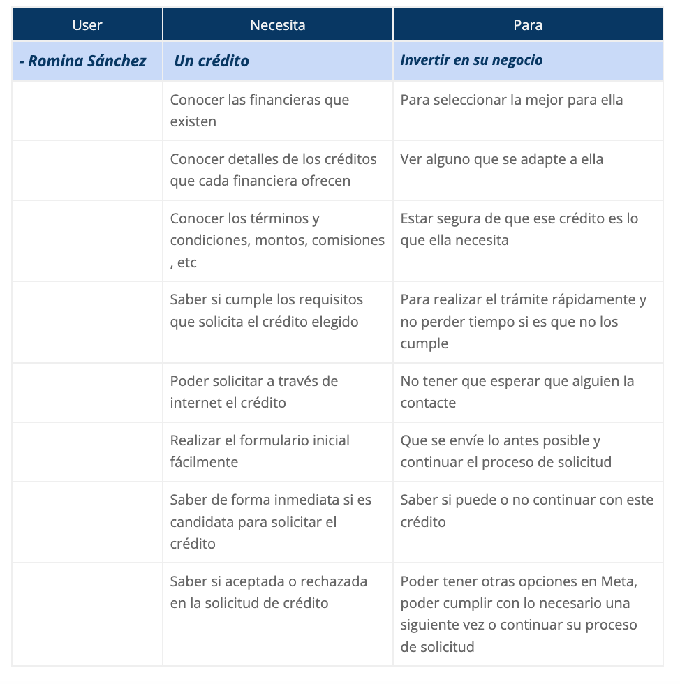

Crédito digital
Objetivo
Se busca mejorar el proceso de solicitud de crédito para que las clientas no dependan de que un asesor las visite en su domicilio y ellas puedan realizar su solicitud desde la app, ahorrando tiempo y aumentando captación digitalmenteBenchmarking
Se hizo un estudio de mercado de ls diferentes financieras que ofrecen créditos similares a nuestro público objetivo
User persona
Se crea la persona que será la usuaria final de la solución del crédito digital
User needs
Se enlistan las necesidades que tiene nuestra persona, esto para conocer el como es que se debe rá trabajar para ayudar a que su experiencia sea mucho más sencilla y amigable
Stakeholder Map
Con la información anterior ya plasmada se pudo crear el journey map de cada uno de los perfiles haciendo el recorrido de como interactúan con la plataforma y marcando el como se sentían y como podíamos mejorar en cada uno de esos puntos
User journey
Una vez ubicados todos los involucrados internos y externos, se trabaja con el user journey para ver como será el proceso desde la búsqueda de la prospecto en web hasta loa activación de su grupo en la empresa
Service Blueprint
Al terminar el user journey se pudo desarrollar el service blueprint para poder ver la relación entre negocio y el usuario finalUser flows
Se comienzan a trazar los user flows para la solicitud de crédito digital, marcando los diferentes medios por los cuales llegará el prospecto y en los cuales tendrá interacción con las áreas involucradasMockups
Se apoya al equipo de UI con textos y prueba de usabilidad en el desarrollo de la funcionalidad